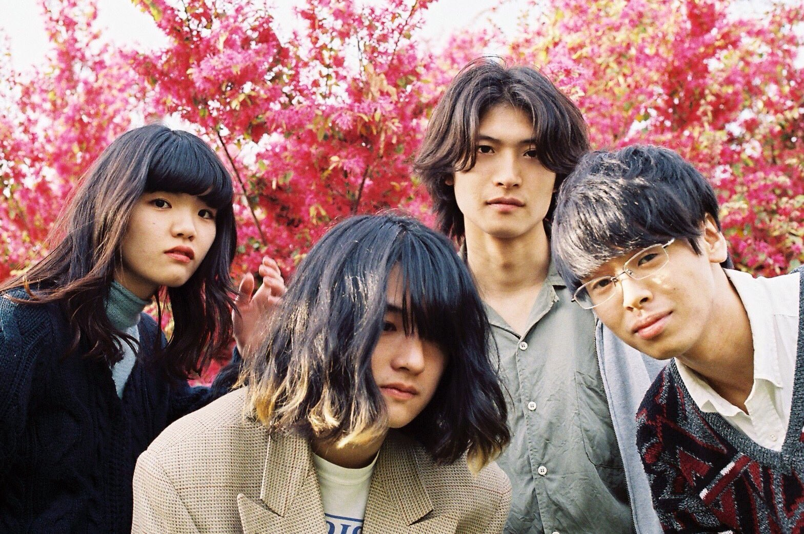
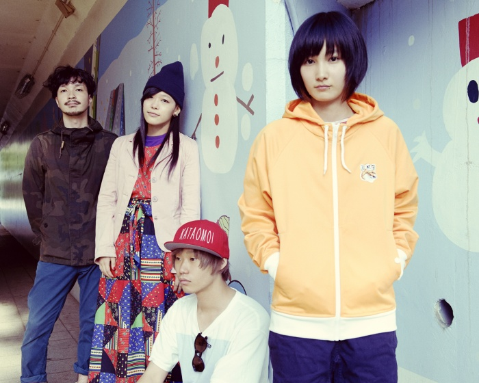
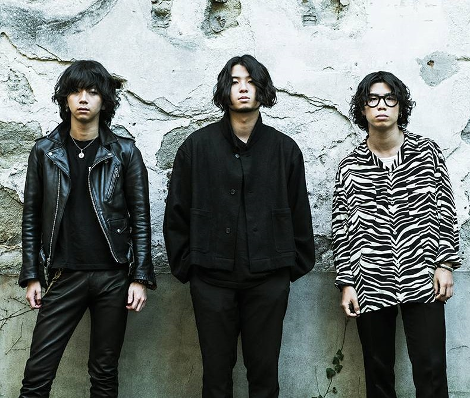
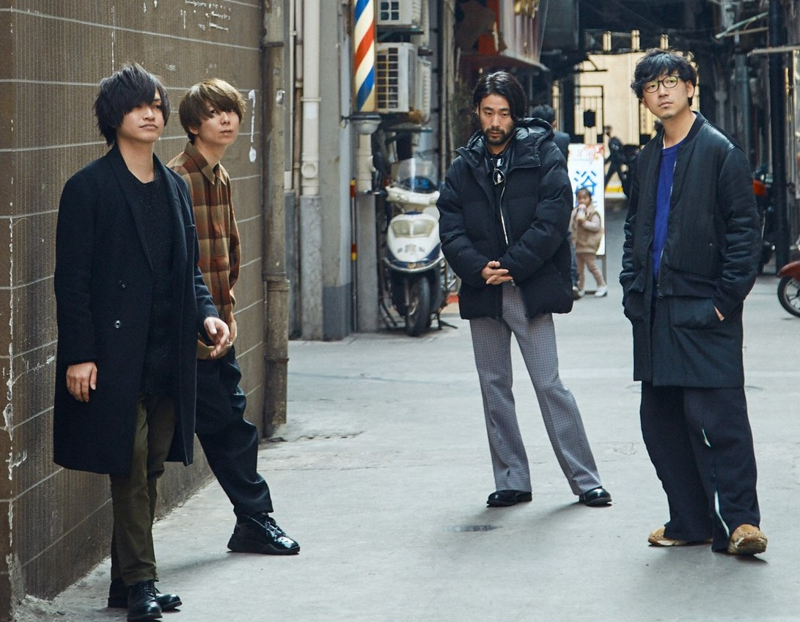
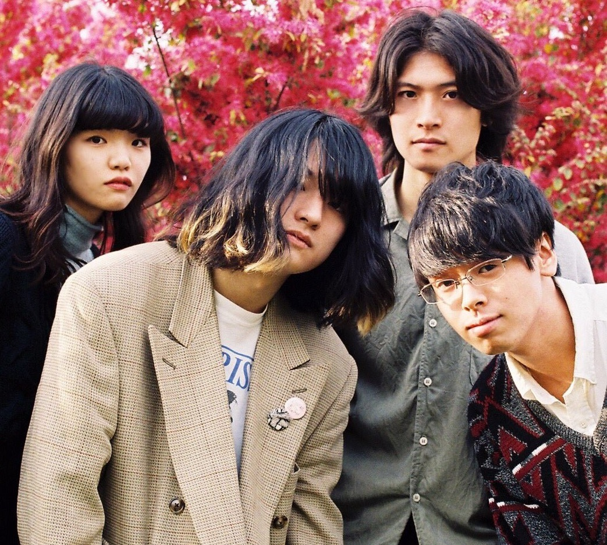

Local Japanese Music
Local Japanese Music
Our Top 10 Music Chart
Band: Scandal
Origin:Japan
Genres: Pop rock, Pop punk, Alternative rock, Garage rock
Years Active: 2006 - Present

Band: SHISHAMO
Origin: Kanagawa Prefecture, Japan
Genres: Alternative Rock, Indie Rock
Years Active: 2010 - Present

Band: きのこ帝国
Origin: Japan
Genres: Indie rock, shoegazing, dream pop, post-rock
Years Active: 2007 – 2019
Band: きのこ帝国
Origin: Japan
Genres: Indie rock, shoegazing, dream pop, post-rock
Years Active: 2007 – 2019

Band: Mass of the Fermenting Dregs
Origin: Japan
Genres: Alternative Rock, Indie Rock
Years Active: 2002 – present

Band: SIX LOUNGE
Origin:Tokyo, Japan
Genres: Alternative Rock, Indie Rock, Punk Rock
Years Active: 2012 - Present
Band: SIX LOUNGE
Origin:Tokyo, Japan
Genres: Alternative Rock, Indie Rock, Punk Rock
Years Active: 2012 - Present

Band: indigo la End
Origin: Tokyo, Japan
Genres: Indie Rock, Pop Rock
Years Active: 2010 - Present
Band: indigo la End
Origin: Tokyo, Japan
Genres: Indie Rock, Pop Rock
Years Active: 2010 - Present
Artist: あいみょん
Origin: Nishinomiya, Hyogo, Japan
Genres:J-Pop, Rock
Years Active: 2014 – present
Artist: 植田 真梨恵
Origin:Kurume, Fukuoka, Japan
Genres:J-Pop, Rock
Years Active: 2008 - Present

Band: Hump Back
Origin:Osaka, Japan
Genres: Alternative Rock, Indie Rock
Years Active: 2009 - Present

Band: No Buses
Origin:Japan
Genres:Indie Rock, Power Pop
Years Active: 2016 - Present
Band: No Buses
Origin:Japan
Genres:Indie Rock, Power Pop
Years Active: 2016 - Present